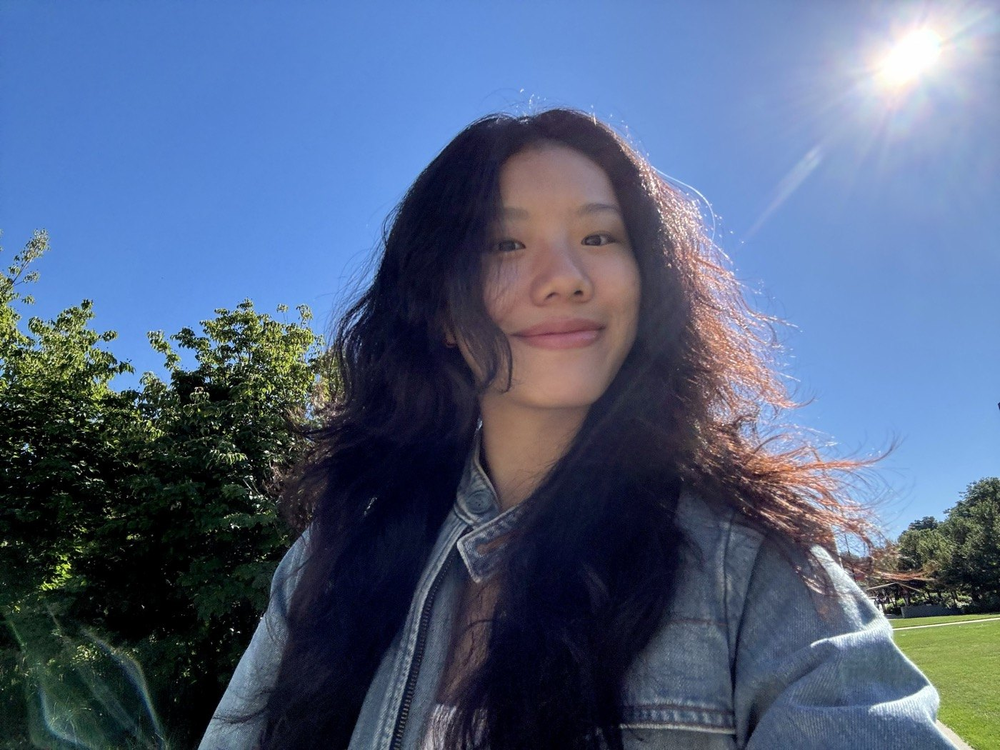

About Emily Zhang

2005
Hi, I’m Emily — 蕴涵 (Yùn Hán),
if you’re feeling formal
I go by both names, so take your pick — one just comes with better dumplings attached.
I’m a junior at Carnegie Mellon University, splitting my time between Human-Computer Interaction and an interdisciplinary program in Fine Arts and Information Systems — which is a fancy way of saying I refused to pick a lane, and I regret nothing.
At heart, I’m an artist and a designer chasing two things: versatility and impact. I want to make human-centered design that does real work in the world — sharp enough to matter, soft enough to leave people a little more at peace, a little more loved, than before they found it.
When I’m not deep in a design sprint, you’ll probably find me:
- talking to my plants like they understand deadlines
- elbow-deep in paint in my makeshift studio
- cooking something ambitious and mildly chaotic
- negotiating with myself about the gym (the gym is winning less than it should)
- wandering off to explore new territory, just because